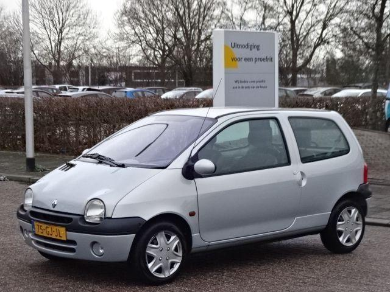

Managerstaal
Als bus 21 op het Centraal Station aftikt, stap ik uit.
Mijn zoon doet een powernapje in z’n bolide. Collegavoetgangers maken hun meters met de kop in de kraag, geteisterd door regen en het rukwindenbeleid van de grote CEO in the sky. De main target van mijn bustrip is een visit aan de Openbare Bibliotheek Amsterdam, in de hoop Stijloefeningen van Raymond Queneau te sublimeren, een actiepuntje dat ik al wat langer van m’n to-do-list probeer af te tekkelen.
Voor de trappen van de bibliotheek heb ik een bilateraaltje met een mij volkomen onbekende vrouw met zwart krullend haar.  In het Engels met een Frans accent kauwt ze mij in een één-op-één consult voor of deze hut toevallig het postkantoor is. Toevallig weet ik dat dit niet bepaald de case is. Bottleneck is dat de headquarters van het postkantoor hier ooit wel stond, maar al lang en breed ge-outsourced is. Terwijl ik deze kwestie probeer af te kaarten, kijkt de vrouw enigszins zenuwachtig naar achteren waar een asgrijze Renault zich van ons escaleert. Ik heb nog maar net aan haar teruggekoppeld dat ze naar de Raadhuisstraat moet, of ze zet het op een lopen. Ik focus me weer op m’n missie.
Boven, in het kloppend hart van de bibliotheek, is de key isssue dat Stijloefeningen hoogst probably verkeerd gefiled is. Ik zoek bij de Q en zie dat een hoop boeken van Queneau in place staan, maar net Stijloefeningen niet. Dankzij mijn pro-actieve hands-on-mentaliteit maak ik de decission om het er nog niet bij te laten. Als ik intune op de ICT-tools van de bieb, blijkt dat Stijloefeningen gewoon op de daartoe bestemde place present moet zijn. Ik heb een overlegmomentje met een medewerker, die met me mee gaat zoeken. Stukje commitment naar de klant toe. Maar het consult mag niet baten, Stijloefeningen ligt off-topic, het worst-kaas-scenario is een voldongen fact. Of is er nog licht aan het eind van de funnel? De medewerker zegt dat er nog wel degelijk opportunities zijn om dit brandje te blussen en raadt me aan om hier even een mailtje naar z’n concullegae van het magazijn over te dichten, daar hebben ze ongetwijfeld nog een exemplaar geparkeerd. Nadat ik m’n mailtje heb uitgerold, wacht ik een kwartier. In de feedback die ik via de digitale shortcut uitgecommuniceerd krijg, staat dat Stijloefeningen gewoon op de daartoe aangewezen plek ligt afgekaderd. Ik verlaat de toko met een onbevredigd gevoel.
Op het Bos en Lommerplein, vlak bij mijn huis, tekkel ik wat babyschoentjes voor m’n zoon. Niet bepaald een win-winsituatie, maar helemaal pointless was deze dag dankzij een dergelijke suboptimale solutie uiteindelijk niet.